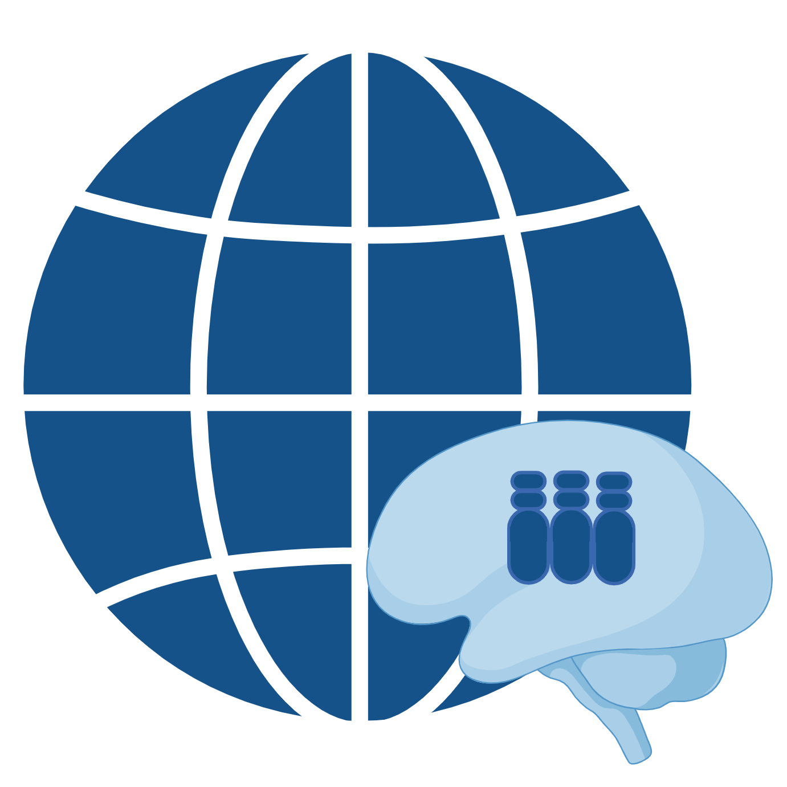
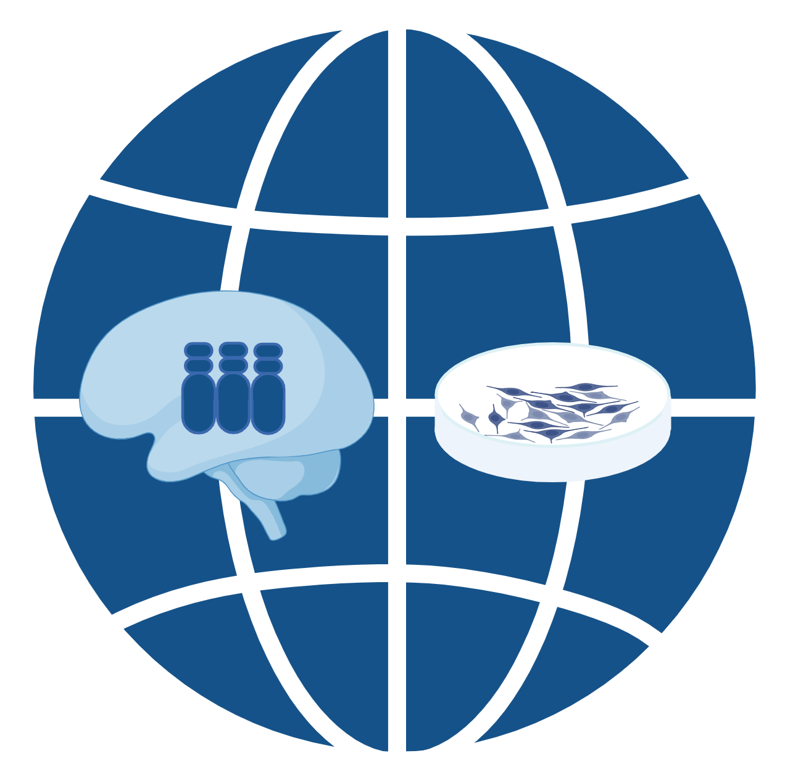
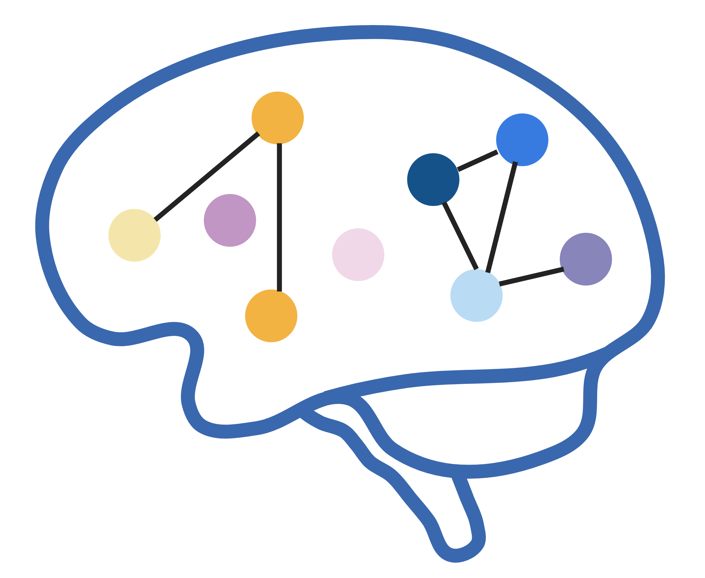
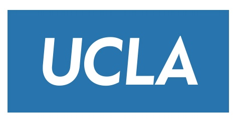

Hi, I’m Alexis!
Human Genetics | Bioinformatics Developer
I design and implement production-ready bioinformatics workflows in Python and R that translate complex molecular data into reliable, interpretable results. My work bridges experimental assay development and computational systems, with a focus on data quality assessment, performance evaluation, and reproducibility across technologies and conditions.
Technical Skills
Tech Stack
R · Python · Bash · CSS · HTML · AWS
Genomic & transcriptomic analysis, single-cell analysis, pipeline automation, scalable/reproducible workflows
Frameworks
SciPy · Pandas · NumPy · SCENIC+
Seurat · Signac · Monocle3 · CellChat · glmmTMB · lme4
Multi-omic integration, trajectory, cell-communication, GRN, linear models, GLMM, CNV estimation
Data Analytics
Genomics · Transcriptomics · Multi-omics · Biostatistics · Machine Learning
Integrative modeling, visualization, pattern discovery, statistical inference
Experimental Lab Work
Genetics & Genomics · Neuroscience · Neurodevelopment
Human cortical development, cellular & molecular characterization
Projects

Ts21 Neocortical Multiome Atlas

Ts21 NPC Multiome Atlas

Neurodevelopmental Cell Predictor
Publication
Weber, A.~† and Vuong, C.K.~†, et al. “A single-cell multi-omic analysis identifies molecular and gene-regulatory mechanisms dysregulated in the developing Down syndrome neocortex.” bioRxiv. (2025).
Certificates
Fundamentals of AI/ML in Precision Medicine
Stanford Data Ocean, Stanford University
Building un/supervised models, neural networks, and transformers with machine learning for biomedical analysis in Python
Fundamentals of Data Science in Precision Medicine and Cloud Computing
Stanford Data Ocean, Stanford University
Biostatistical and bioinformatic analysis, using AWS and Python

UCLA Biosciences Leadership SeriesGraduate Program in Biosciences, UCLA
Effective communication, project management, teamwork and research self-efficacy
Entering Mentorship Training
Center for Integration of Teaching, Research and Learning, UCLA
Evidence based teaching strategies and mentorship in STEM
Timeline
Ph.D. — Human Genetics
University of California, Los Angeles (UCLA)
Defining molecular and gene dysregulation in Down syndrome neocortex. Dissertation focused on single-cell multi-omic analysis of human neurodevelopment and aneuploidy, including reproducible pipelines for RNA/ATAC integration, pseudotime, and GRN inference.
Researcher — Computational Genomics in Neurodegenerative Disease
Van Andel Research Institute (VARI)
Designed and applied Python and R-based computation to identify mechanisms of epigenetic dysregulation in Alzheimer’s disease patient cortices. Characterized the biochemical role of familial Parkinson’s disease variants in transmembrane proteins that affect endo-lysosomal intraneuronal trafficking.
B.Sc. — Genomics and Molecular Genetics
Michigan State University (MSU)
Undergraduate research developing and implementing pipelines to identify differential patterns of RNA editing and structural conformation in Trypanosoma brucei.
News
Thesis publication: Alexis’ thesis dissertation published on ProQuest: Defining molecular and gene dysregulation in Down syndrome neocortex.
Dec 11, 2025
Manuscript update: Submitted revised Ts21 multi-omic atlas manuscript. Under consideration at Science.
Dec 03, 2025
Manuscript pre-print published: Submitted pre-print of Ts21 multi-omic atlas manuscript. This is the first-ever publication in pre-print of neurodeveloping Ts21 single-cell multiome.
Jun 30, 2025
Thesis defense: Alexis successfully defends her thesis.
Jun 02, 2025